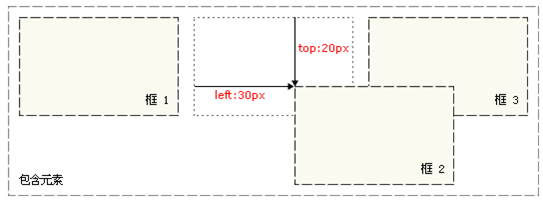
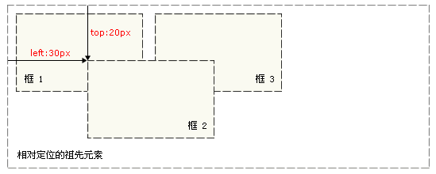

CSS 定位 (Positioning) 属性允许你对元素进行定位。
它允许你定义元素框相对于其正常位置应该出现的位置， 或者相对于父元素、另一个元素甚至浏览器窗口本身的位置。
div、h1 或 p 元素常常被称为块级元素。这意味着这些元素显示为一块内容， 即“块框”。与之相反，span 和 strong 等元素称为“行内元素”，这是因为它们的 内容显示在行中，即“行内框”。
利用display属性改变框的类型，即：
display:block;让行内元素设置成块级元素
display:none;没有框
| 属性 | 描述 |
|---|---|
| top | 定义了一个定位元素的上外边距边界与其包含块上边界之间的偏移。 |
| right | 定义了定位元素右外边距边界与其包含块右边界之间的偏移。 |
| bottom | 定义了定位元素下外边距边界与其包含块下边界之间的偏移。 |
| left | 定义了定位元素左外边距边界与其包含块左边界之间的偏移。 |
| clip | 设置元素的形状。元素被剪入这个形状之中，然后显示出来。 |
| vertical-align | 设置元素的垂直对齐方式。 |
| z-index | 设置元素的堆叠顺序。 |
position 属性值的含义：
static
元素框正常生成。块级元素生成一个矩形框，作为文档流的一部分， 行内元素则会创建一个或多个行框，置于其父元素中。
relative
元素框偏移某个距离。元素仍保持其未定位前的形状，它原本所占的空间仍保留。
absolute
元素框从文档流完全删除，并相对于其包含块定位。 包含块可能是文档中的另一个元素或者是初始包含块。 元素原先在正常文档流中所占的空间会关闭，就好像 元素原来不存在一样。元素定位后生成一个块级框， 而不论原来它在正常流中生成何种类型的框。
fixed
元素框的表现类似于将 position 设置为 absolute，不过其包含块是视窗本身。提示： 相对定位实际上被看作普通流定位模型的一部分，因为元素的位置相对于它在普通流中的位置。
相对定位：
如果对一个元素进行相对定位，它将出现在它所在的位置上，通过设置垂直或水平位置， 让这个元素“相对于”它的起点进行移动。
.adv_relative{
position:relative;
left:30px;
top:20px;
}
注意，在使用相对定位时，无论是否进行移动， 元素仍然占据原来的空间。因此，移动元素会导致它覆盖其它框
绝对定位：
元素位置相对于最近的已定位祖先元素， 如果元素没有已定位的祖先元素，它的位置相对于最初的包含块。
.adv_absolute{
position:absolute;
left:30px;
top:20px;
}

浮动：
浮动的框可以向左或向右移动，直到它的外边缘碰到包含框或 另一个浮动框的边框为止。 由于浮动框不在文档的普通流中，所以文档的普通流中的块框表现得就像浮动框不存在一样。 在 CSS 中，我们通过 float 属性实现元素的浮动。| 值 | 描述 |
|---|---|
| left | 元素向左浮动 |
| right | 元素向右浮动 |
| none | 默认值。元素不浮动，并会显示在其在文本中出现的位置 |
清楚浮动：
要想阻止行框围绕浮动框，需要对该框应用clear属性。语法：<div style=“clear:both;”></div>